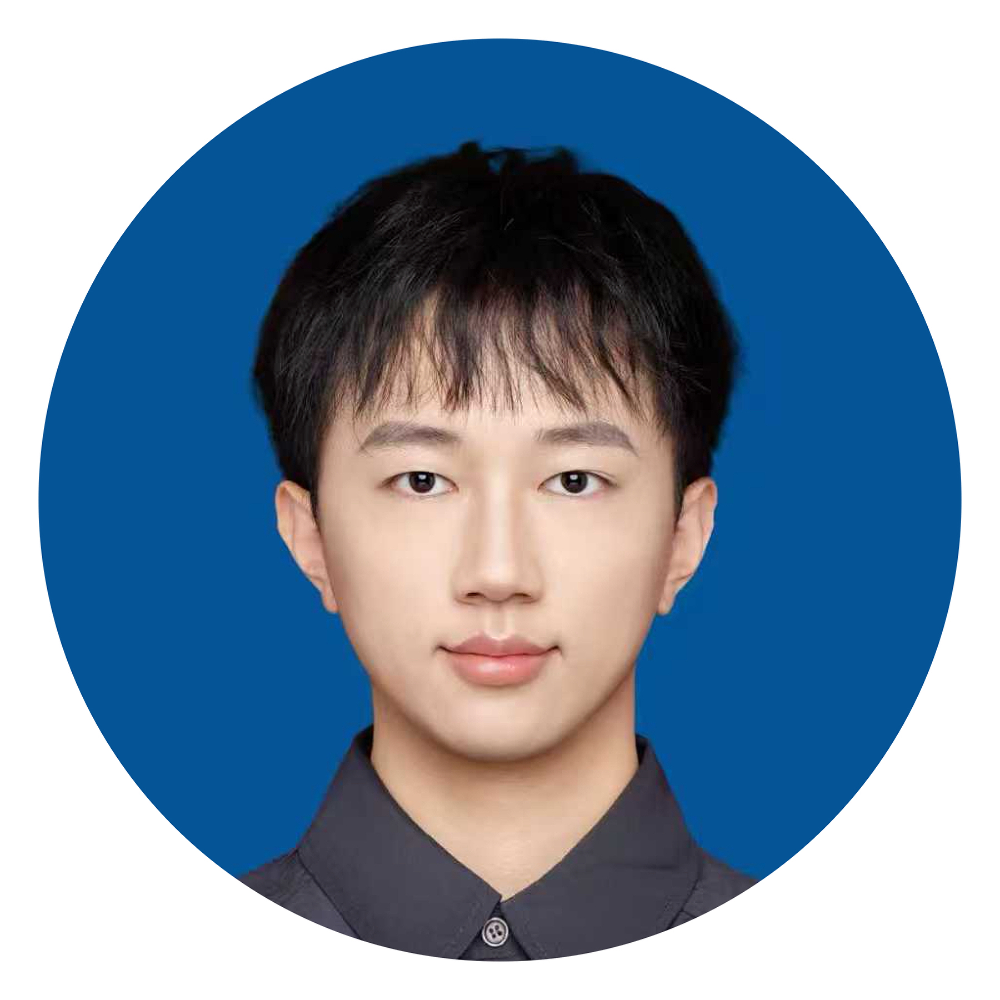
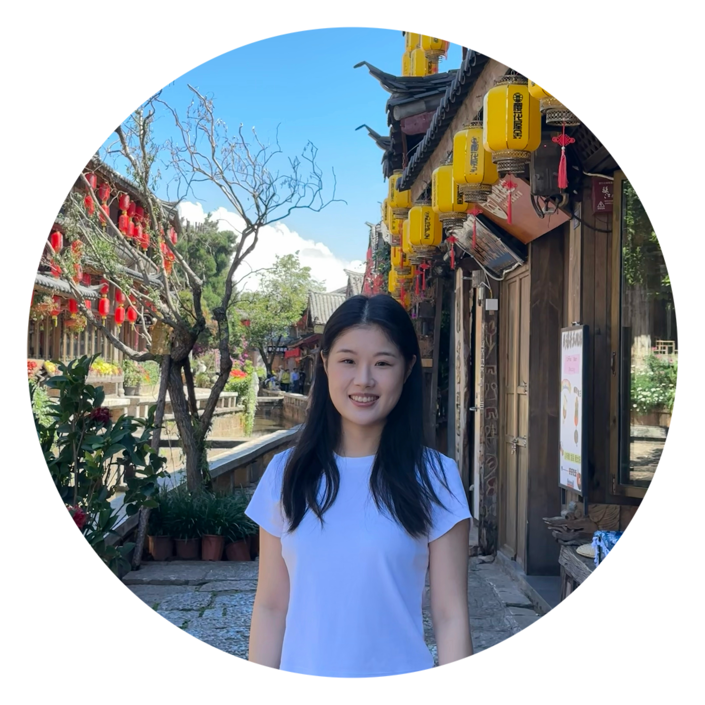
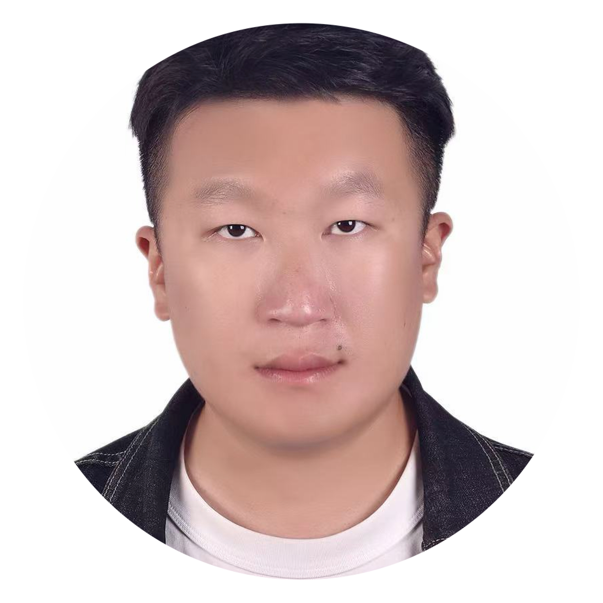
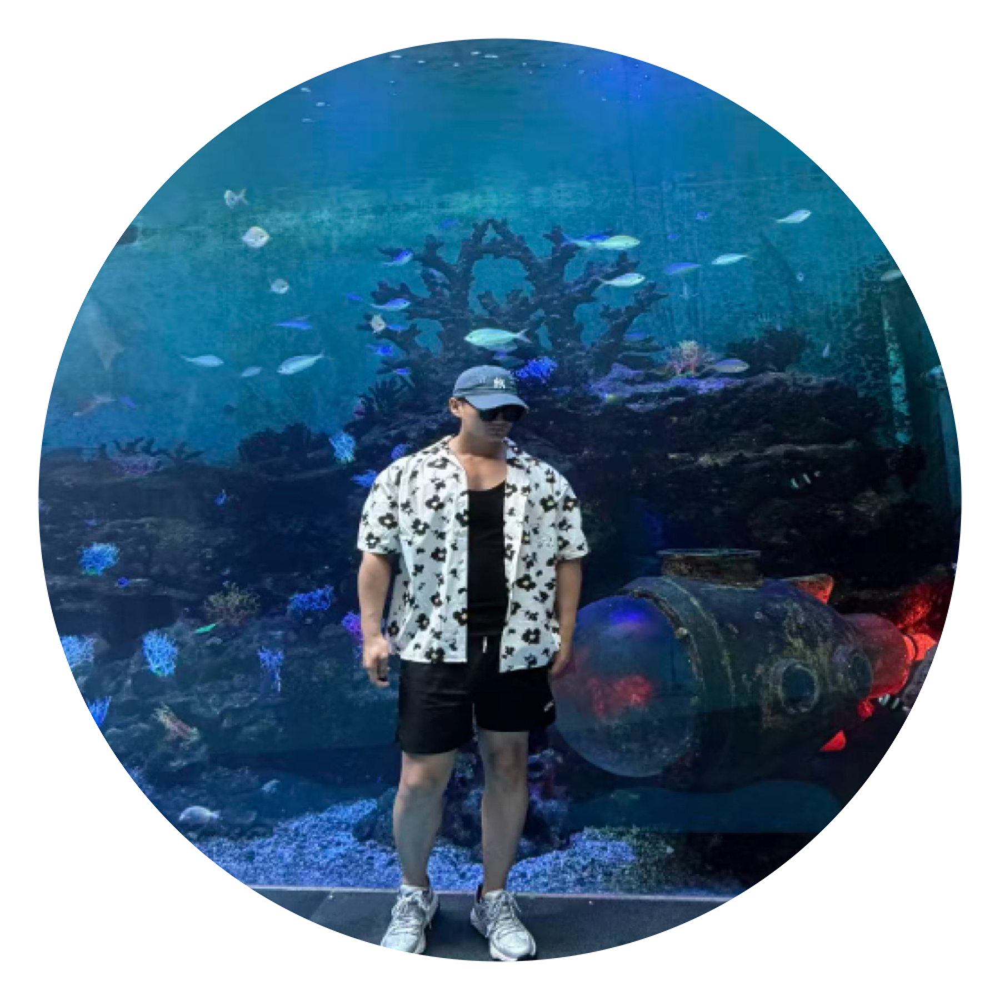
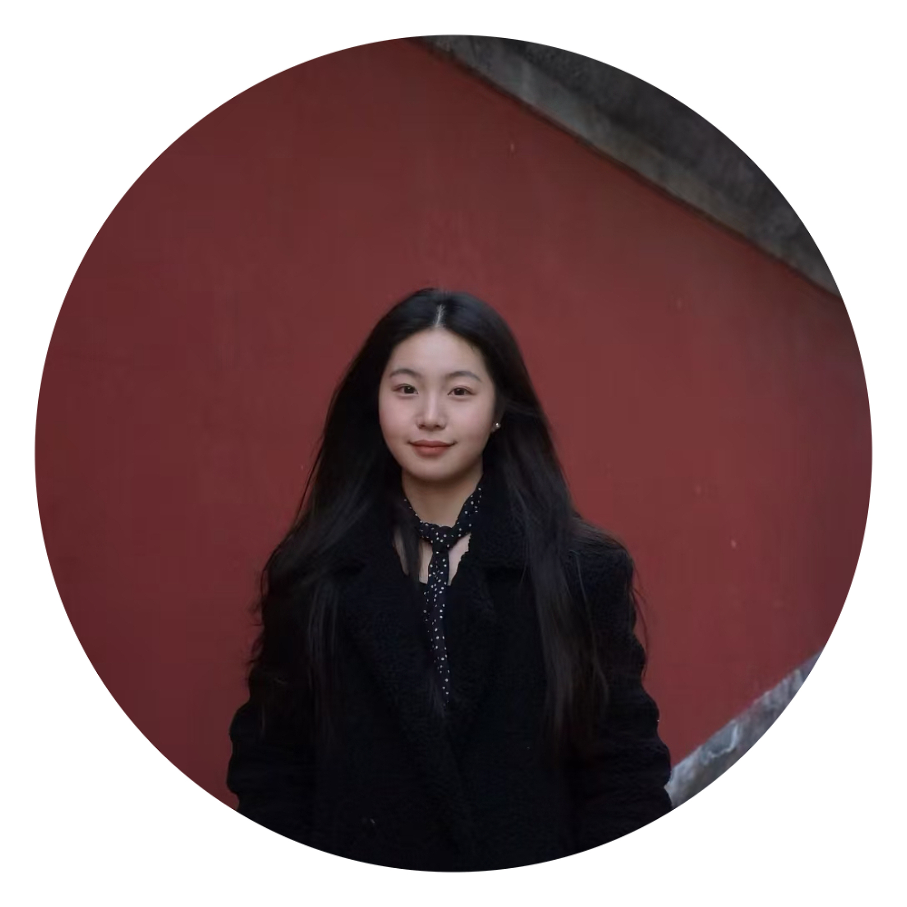
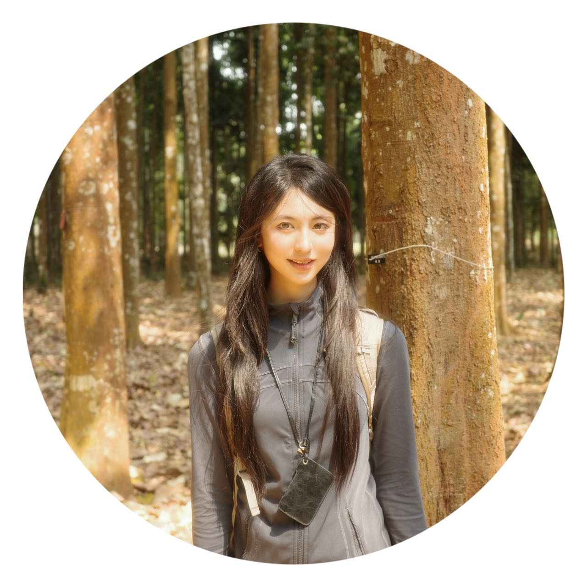
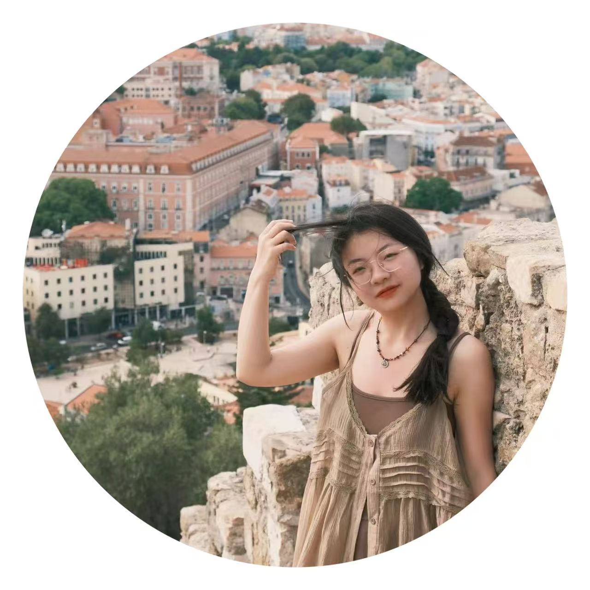

Professor Luyao Chen, Principal Investigator

Guang Yang, PhD Candidate
A human being should be able to change a diaper.
Research interests: neurolinguistics, syntax, non-invasive brain stimulation, fMRI
CV (PDF)

Zhaoqian Yue, PhD Candidate
Keep going.
Research interests: neural bases of language processing, neural stimulation

Zihan Wang, PhD Candidate
Results answer everything.
Research interests: reinforcement learning, large language models, multi-agent technology

Zhaoyang Shan, PhD Candidate
Small steps, great growth.
Research interests: positive psychology, second language acquisition, Gai-assisted foreign language writing

Jiaran Dong, Research Assistant
Research interests: language processing, speech production, language disorders, auditory prediction

Sirui Hu, Research Assistant
All is well.
Research interests: machine learning, computational cognitive neuroscience, EEG/fNIRS, perception, emotion and language

Ziyao Zuo, Research Assistant
Always be brave.
Research interests: language processing, non-invasive brain stimulation, EEG, ECG
Alumni
| Name |
Current Position |
| Xingfang Qu |
Pursuing doctoral degree in The University of Hong Kong |
| Qingwei Xue |
Pursuing doctoral degree in Beijing University |
| Yao Cheng |
Secondary School Teacher |
| Mingchuan Yang |
Pursuing doctoral degree in The Chinese University of Hong Kong |
| Xu Jiang |
Secondary School Teacher |